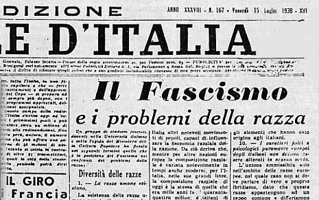

LEGGI RAZILI
| LEGGI RAZILI | 27/01/2014 |

La politica razziale nella Germania nazista si sostanzia nelle specifiche scelte e leggi adottate dalla Germania nazista in materia razziale: esse postulavano la superiorità della "razza ariana" e comportarono una serie di misure discriminatorie, soprattutto nei confronti della popolazione ebraica. Queste politiche affondano le proprie radici nell’epilogo della prima guerra mondiale, quando le fazioni nazionaliste tedesche, irritate e deluse dalla sconfitta subita, inventarono la leggenda della "pugnalata alle spalle" (in tedesco DolchstoBlegende) della Germania da parte di forze esterne (principalmente ebrei, massoni e comunisti). Il nascente partito nazista fece leva su questo sentimento per la propria propaganda politica e successivamente, assunto il potere, lo istituzionalizzò attraverso la pubblicazione delle leggi di Norimberga e l'apertura di campi di internamento.
LEGGI RAZIALI IN ITALIA
Le leggi razziali fasciste sono un insieme di provvedimenti legislativi e amministrativi (leggi, ordinanze, circolari, ecc.) che vennero varati in Italia fra il 1938 e il primo quinquennio degli anni quaranta, inizialmente dal regime fascista e poi dalla Repubblica Sociale Italiana, rivolti prevalentemente ma non solo contro le persone di religione ebraica. Furono lette per la prima volta il 18 settembre 1938 a Trieste da Benito Mussolini dal balcone del Municipio in occasione della sua visita alla città. Furono abrogate con i regi decreti-legge nn. 25 e 26 del 20 gennaio 1944 emessi durante il Regno del Sud.